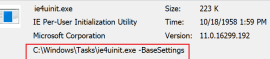

For good measure (and deception), we copy the respective files to C:\Windows\Tasks\ since any “authenticated user” can write to this directory by default. Now, let’s perform a proof-of-concept exercise in persistence and evasion (in an AutoRuns context) by creating a Run Key for IE4uinit:
REG ADD "HKCU\SOFTWARE\Microsoft\Windows\CurrentVersion\Run" /V "IEinit" /t REG_SZ /F ?D "C:\Windows\Tasks\ie4uinit.exe -BaseSettings"
After opening the AutoRuns program and removing the Hide Windows Entries filter, we drill down to our Run Key entry

To the untrained or impatient eye, our proof-of-concept Run Key seems pretty convincing. IE4uinit is a signed Microsoft Windows Binary, and C:\windows\Tasks is a an interesting directory (especially if opted for a Schedule Task instead). Most importantly, take note that there is absolutely no visible evidence of our modified INF file (with SCT payload) even when the Windows Entries filter is removed. After logging back into the machine, our SCT payload launches calc.exe.